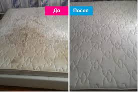
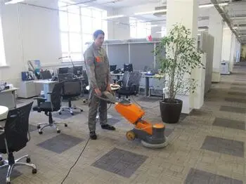

Наші послуги з хімчистки

💙 Хімчистка диванів
Поверніть вашим м'яким меблям відчуття новизни та чистоти. Працюємо по всьому Києву та Київській області — виїзд протягом години!
- ✅ Виїзд у Голосіївський район протягом години
- ✅ Еко-засоби безпечні для дітей і тварин
- ✅ Видаляємо плями, запахи, шерсть, бактерії
- ✅ М'які меблі — як нові через кілька годин
🌐 Замовити онлайн

🛡️ Хімчистка матраців: Поверніть собі здоровий сон
Уявіть, як приємно торкатися ідеально чистого текстилю. Ми знищуємо 99% пилових кліщів та алергенів, які ви не бачите, але відчуваєте кожної ночі. Подбайте про здоров'я своїх близьких вже сьогодні.
- ✅ Терміново: Виїзд майстра по Голосіївському району в день звернення
- ✅ Результат: Повне видалення старих плям та неприємних запахів
- ✅ Здоров'я: Глибока дезінфекція паром без хімічного запаху
- ✅ Гарантія: Безпечні екосертифіковані засоби для дітей та тварин
🌐 Замовити хімчистку зі знижкою

✨ Хімчистка килимів: Відчуйте різницю на дотик
Ваш дім заслуговує на бездоганний вигляд. Ми не просто миємо підлогу — ми повертаємо килиму насичений колір і м'якість, ніби ви щойно придбали його в магазині. Позбавтеся від плям, про які ви вже забули.
- ✅ Зручно: Професійна хімчистка килимів на дому або з вивозом
- ✅ Екологічно: Гіпоалергенна хімія, що не викликає подразнень
- ✅ Глибоко: витягуємо бруд з основи волокон, усуваючи запахи
- ✅ Швидко: Чистка килимів та ковроліну по всьому Києву та області
🌐 Розрахувати вартість онлайн